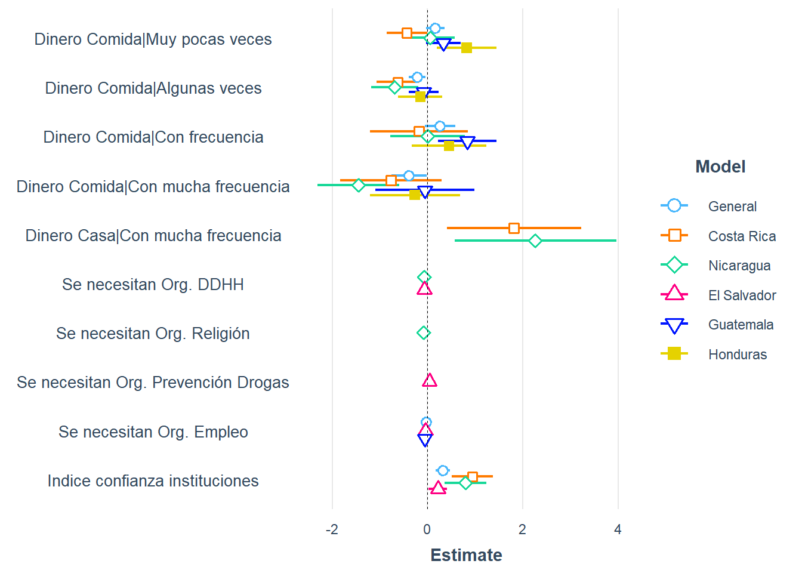

Confianza en instituciones y falta de dinero predicen las evaluaciones de (in)justicia en Centroamérica.
Evaluación de (in)justicia distributiva en jóvenes de Centro-américa
Juan Diego García Castro 12, 
@JuanDiego48cr
JUANDIEGO.GARCIA@ucr.ac.cr
Martín Venegas 2
martin.venegas@ug.uchile.cl
Francisco Robles Rivera1 Lorenzo Ramírez Cardoza1
1 Univsersidad de Costa Rica
2 Centro de Estudios de Conflicto y Coesión Social; Chile
Introducción
A tres décadas de la firma de los acuerdos de paz, Centroamérica se mantiene como una región caracterizada por la extrema desigualdad y la violencia (Sandoval, 2020).
A lo largo de los años, la literatura sobre desigualdad ha profundizado en sus componentes subjetivos, generando evidencia en regiones como Europa (Kluegel et al., 1995) y Latinoamérica (Cramer y Kauffman, 2011). Sin embargo, Centroamérica se ha caracterizado por una carencia de estudios sistemáticos sobre la región.
Este trabajo busca explorar la dimensión subjetiva de la desigualdad en Centroamérica, considerando las particularidades de la región. Dos preguntas guían el estudio: ¿Cuál es la distribución de la evaluación de (in)justicia distributiva en Centroamérica? y, ¿Cuáles son sus predictores más relevantes?
Método
Datos secundarios de cinco colonias Centroamericanas (Sandoval, 2020).
El Limón en Ciudad de Guatemala, La Carpio en San José-Costa Rica, Popotlán en San Salvador-El Salvador, Nueva Capital en Tegucigalpa-Honduras y Jorge Dimitrov en Managua-Nicaragua.
Participaron 1501 jóvenes entre los 14 y 24 años (M=18,7, DE=3,1) de las cuales el 53,3% son mujeres.
Se emplean análisis de medias y regresiones lineales con eliminación hacia atrás.
Resultados
Tabla 1. Medias de evaluaciones de (in)justicia en la distribución de riquezas por país
| País | N | Media | DE |
|---|---|---|---|
| Costa Rica | 298 | 2.21 | 1.24 |
| Nicaragua | 279 | 2.34 | 1.30 |
| Salvador | 298 | 1.52 | 0.82 |
| Guatemala | 296 | 1.71 | 1.12 |
| Honduras | 297 | 1.98 | 1.29 |
Nota: La evaluación de (in)justicia distributiva se midió en un rango de 1 a 5. A mayor valor mayor justicia se evalúa.

Figura 1. Coeficientes de regresión para evaluaciones de (in)justicia por país
Discusión
El país donde más justa se considera la distribución de riquezas es Nicaragua (Tabla 1). → Construcción identitaria de la comunidad y relación con el gobierno.
La confianza en instituciones es un factor que incide positivamente en las evaluaciones de justicia distributiva en Centroamérica. Especialmente en Costa Rica. → Discurso político de identidad nacional e imagen de igualdad (igual-íticos).
La falta de dinero para pagar la comida y la casa también resultan relevantes en varios países centroamericanos. → Efecto de la privación absoluta y relativa (jóvenes en contexto de vulnerabilidad social).
Agradecimientos
Agradecemos el apoyo del Centro de Estudios de Conflicto y Cohesión Social-COES (ANID/FONDAP/15130009).
Referencias
- Cramer, B. D., & Kaufman, R. R. (2011). Views of Economic Inequality in Latin America. Comparative Political Studies, 44(9), 1206–1237. https://doi.org/10.1177/0010414010392171
- Kluegel, J. R., Mason, D. S., & Wegener, B. (Eds.). (1995). Social justice and political change: Public opinion in capitalist and post-communist states. A. de Gruyter
- Sandoval, C. (2020). Demandas y expectativas de jóvenes residentes en colonias empobrecidas de Centroamérica. Estudios Centroamericanos ECA, Vol. 75 Núm. 761, 2020.